Principle: Every segment must make the viewer need to watch the next one.
Open a curiosity gap → escalate the stakes → close it just before the next gap opens.
Source: Joseph Sugarman, The Adweek Copywriting Handbook — "Make the first sentence so compelling that the reader cannot stop."
Source: Joseph Sugarman, The Adweek Copywriting Handbook — "Make the first sentence so compelling that the reader cannot stop."
0:00–0:15
HOOK
Does it create an itch they must scratch?
credibility_40_global_projects
flow-v3 B-roll
- Identity lock-in lands in the first 3 seconds — viewer thinks "that's me"Check: "If your workflow still lives in your head — this is for you." Pain named before solution?
- Credibility is specific, not vague — "40+ enterprise projects" not "years of experience"
- Loss-aversion is explicit — "Skip this and you won't be included in the new roles" lands before the promise
- Outcome promise creates a gap — viewer thinks "how exactly?" and keeps watching
- Hook connects to Problem section — "same confusion, same wasted hour" in hook is the exact pain expanded in 0:15–1:36Curiosity bridge: Hook raises "what is the fix?" → Problem must deepen the wound before answering
0:15–1:36
PROBLEM
Does it make the pain visceral before offering relief?

blank doc frustration
pain_same_decision_repetition

process in head
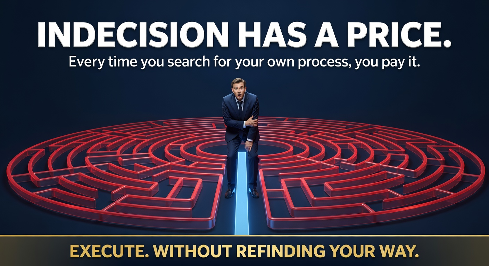
indecision_complexity_cost
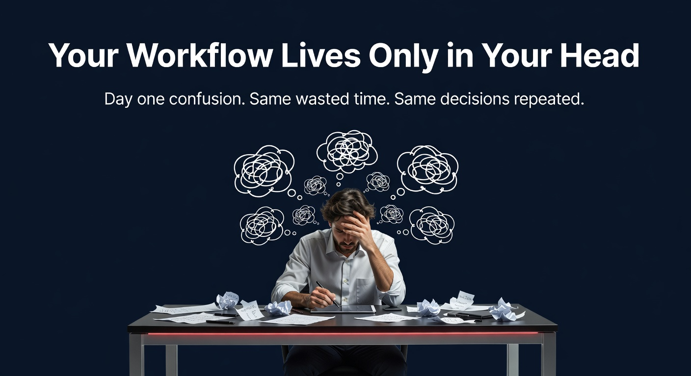
slide2_problem
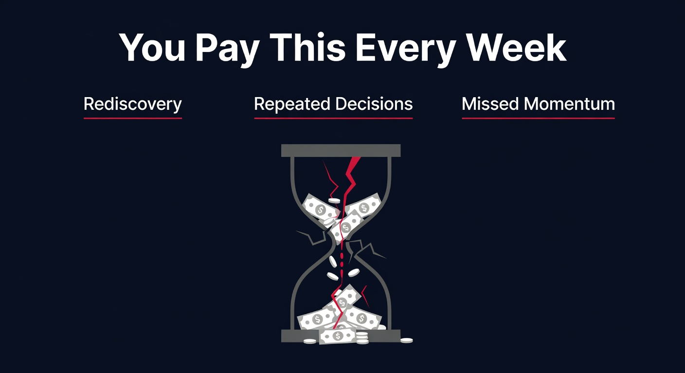
slide3_hidden_tax
- Pain is specific and sequential — "Which script format? Where's the checklist? A-roll or screen capture first?" — viewer recognises their own chaos
- Pain is amplified, not explained — "Every. Single. Video. Same confusion." repeats the hook's language (bucket brigade connection)
- No solution hinted yet — if the viewer can guess the fix here, they leave; keep the answer hidden
- Problem connects forward to Agenda — ends with an implicit question: "Is there actually a way out of this loop?"Curiosity bridge: Problem closes with maximum frustration → Agenda opens the door
1:36–2:08
AGENDA + STAY PROMISE
Does it make the 3 steps feel inevitable?

step123_delivery_pilot
free_tools_ai_career_roadmap
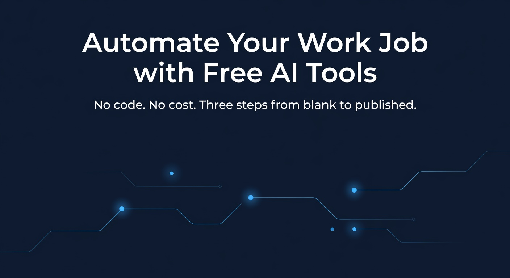
slide1_title
slide5_free_tools
- "By the end you will HAVE X" is stated explicitly — not "you will know how" but "you will HAVE a blueprint"
- Each step is teased, not explained — name it, make it sound achievable, move on
- Stack declared as free — removes the "this won't work for me" objection immediately
- Agenda connects to Step 1 — last line pulls viewer into the first stepCuriosity bridge: "Three steps — here's the first…" creates forward pull
2:08–2:56
STEP 1 — Map Your Production
Does the easy win create appetite for Step 2?
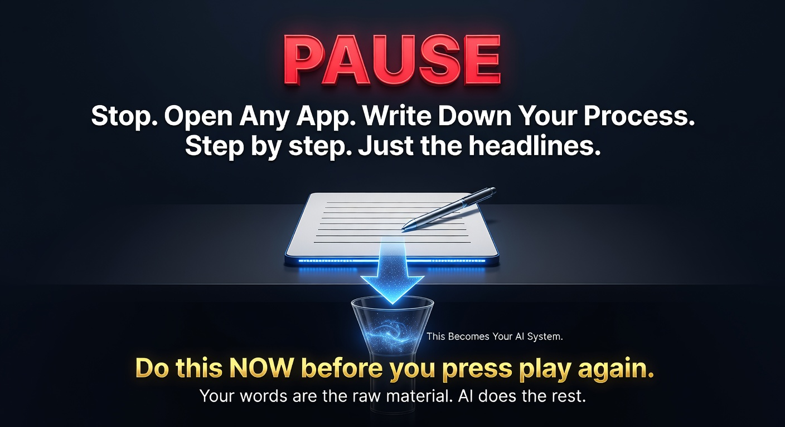
pause_write_your_process
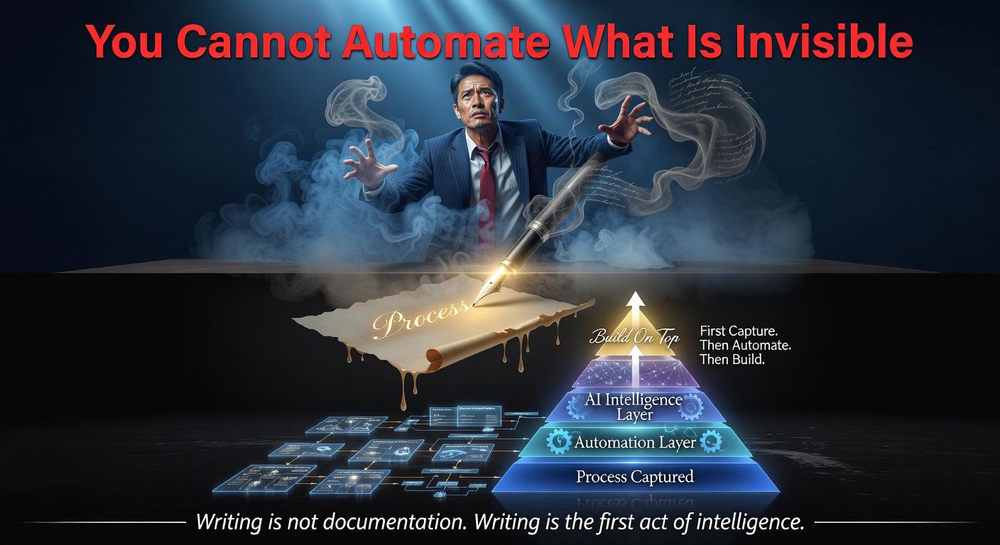
invisible_capture_automate_build
flow-v3-3 B-roll
- Low friction on entry — "Write yours the same way. Don't polish it. Don't format it." removes fear
- "Why it matters" stated before showing how — Sugarman: sell the feeling, then the mechanism
- "Process is invisible" line creates discomfort — viewer feels the gap between where they are and where they could be
- Step 1 ends with an incomplete loop — "You have the map. But a map is useless if you can't read it quickly."Curiosity bridge: Viewer has done the easy thing; now they need to know what to do with it
2:56–3:44
STEP 2 — Let Claude Build the Checklist
Does the AI demo peak credibility and create urgency for Step 3?
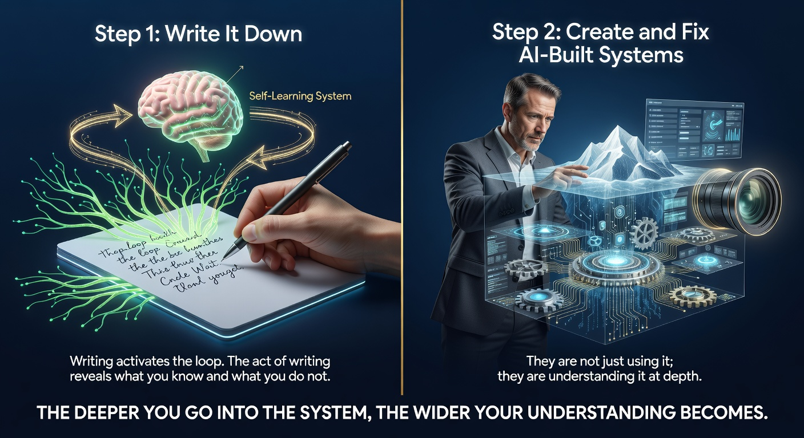
step1_write_step2_ai_system_deep

automation_ai_easier_faster_cheaper
ai_control_panel_all_apps
- Exact prompt is given on screen — specificity ("say exactly this:") signals insider knowledge and builds trust
- Demo shows transformation visually — raw notes → structured checklist (before/after in real time)
- "Fifteen minutes" removes time objection — stated after the demo lands, not before
- AI actor framing is correct — viewer is the director, Claude is the tool; not the other way
- Step 2 ends with a gap — "You have a checklist. But if it lives in a tab you'll close, it's useless."Curiosity bridge: The step most people skip is Step 3 — tease that explicitly here
4:00–4:48
STEP 3 — Pin It. One Click.
Is the "most-skipped step" framed as the only thing that makes the other two work?
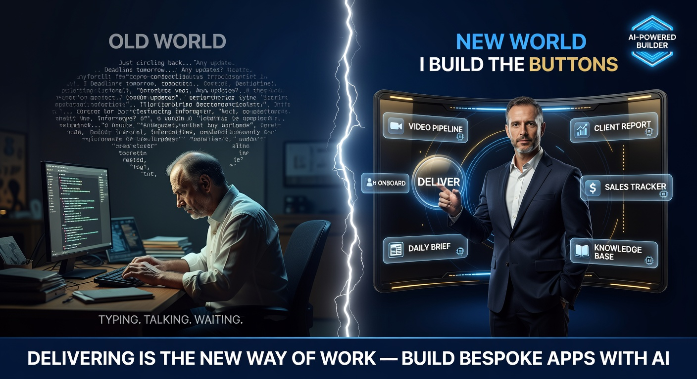
deliver_build_buttons_new_world
flow-v3-4 B-roll
flow-v3-5 B-roll
- Stakes for skipping are named — "Step 3 is the one most people skip — and it's why their systems fall apart in week two"
- Mechanism is simple and visible — GitHub Pages flow shown on screen with zero jargon
- Daily habit is painted — "Every morning you sit down? One click." — sensory, daily, ritual
- Machine-learning framing lands — "Own this as part of your job to train machines" — connects personal habit to AI transformation arc
- Step 3 connects to Summary — "You now have all three. Let me lock them in."Curiosity bridge: Have I actually understood the system? → Summary confirms
4:48–5:20
FULL SUMMARY
Does the recap reframe — not just repeat?
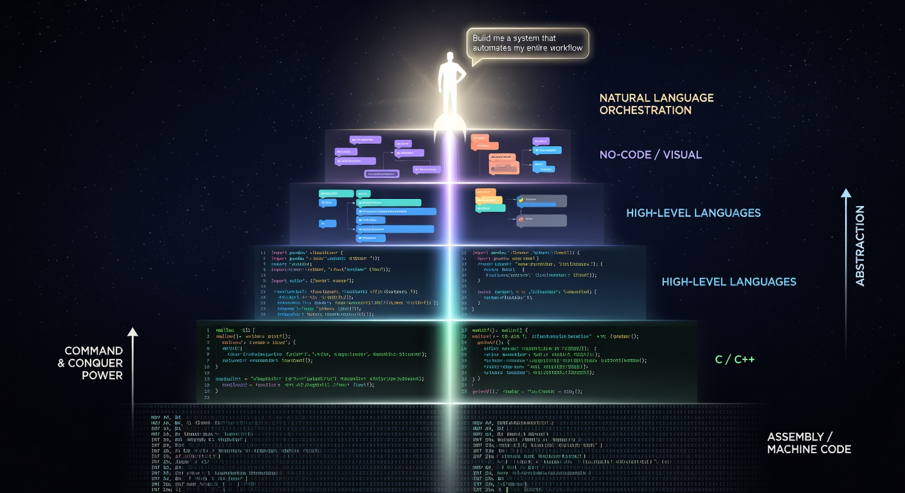
coder_to_orchestrator_abstraction
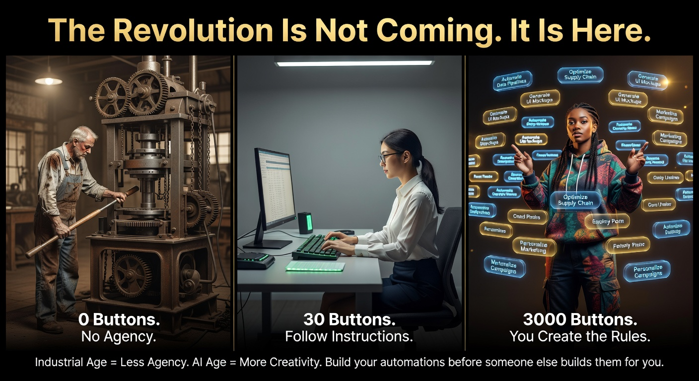
revolution_industrial_info_ai_age
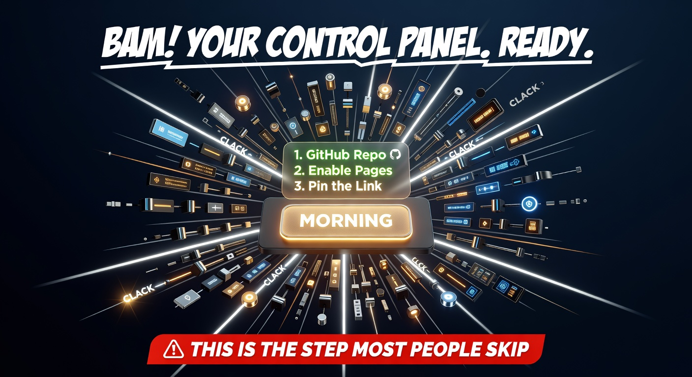
slide9_bam_control_panel
- Each step restated with the outcome, not the action — "Map it" → "you made the invisible visible"
- Transformation arc spoken aloud — BEFORE / AFTER contrast stated explicitly
- "Nothing to remember" closes the original hook loop — the hook's pain ("same confusion every week") is resolved here
- Summary connects forward to CTA — final line creates pull toward action, not closureCuriosity bridge: "Now you know the system — here's the one thing to do in the next 10 minutes…"
5:36–6:08
CALL TO ACTION
Does it give one clear action with stakes for not doing it?
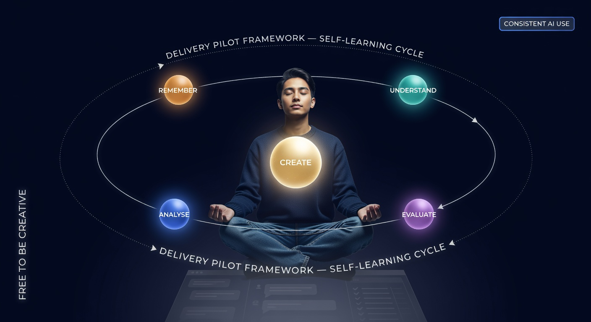
delivery_pilot_self_learning_creative
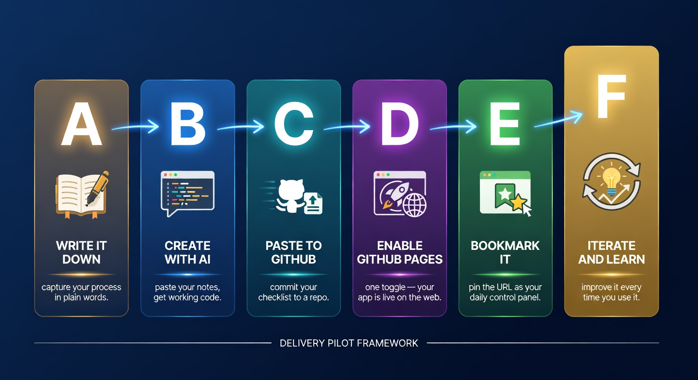
abcdef_6stage_delivery_pilot
your_usecase_not_just_youtube
- One immediate action first — "Write down your stages — just the headlines. Paste into Claude. See what it builds." (low-friction, today)
- Delivery Pilot framed as transformation, not product — "certifies prosumers for free" is the gain; "enterprises" signals it's serious
- Assessment link creates a curiosity gap — what will the assessment reveal about me? → click pull
- CTA connects back to Hook identity — person who clicked for "workflow in your head" should feel this CTA is for them specifically
Cross-Segment Connections — Slippery Slide Audit
Each row must score YES or the segment before it is leaking viewers.
Overall Curiosity Loop Check
The master loop: opened in Hook, closed in CTA.
blurred_3steps_missing_roles
- One master loop opened in Hook, closed in CTA — "workflow in your head" introduced at 0:03 feels resolved at 6:00
- No section gives away the answer of the next — if a viewer can stop and feel satisfied, you closed the loop too early
- "Step 3 is what most people skip" held until Step 2 ends — this is the single most powerful retention spike; do not place it earlier
- Transformation is concrete, not abstract — "20–60 min/week saved" beats "save time"
- Viewer is the actor, AI is the tool — every Claude mention positions the viewer as agent, not observer
Run this checklist against the final edit before publishing.
Any unchecked box is a viewer drop-off point.
Any unchecked box is a viewer drop-off point.